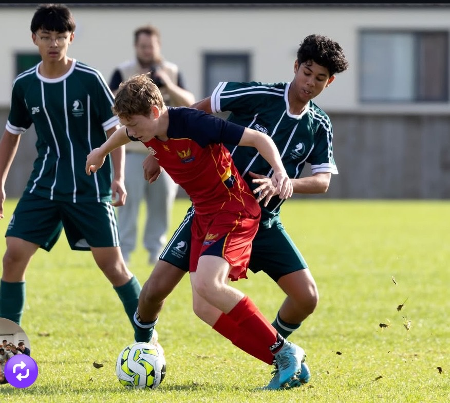
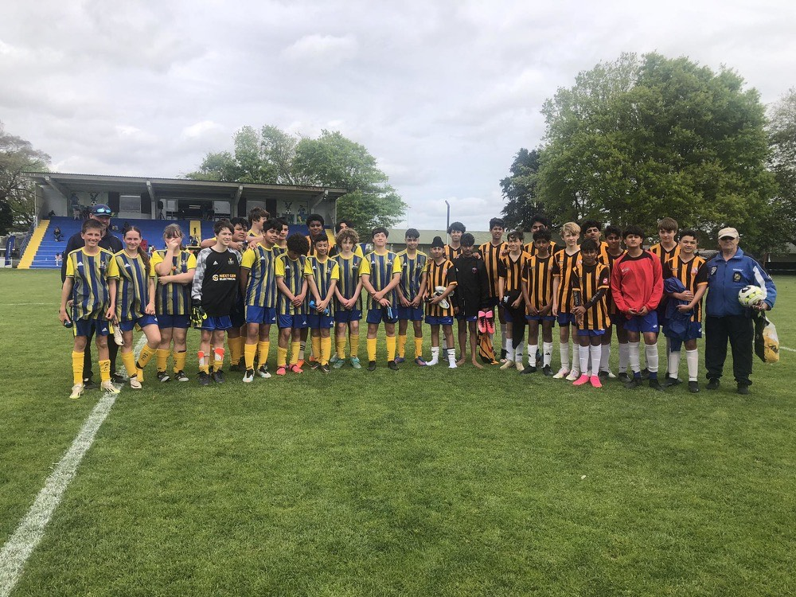
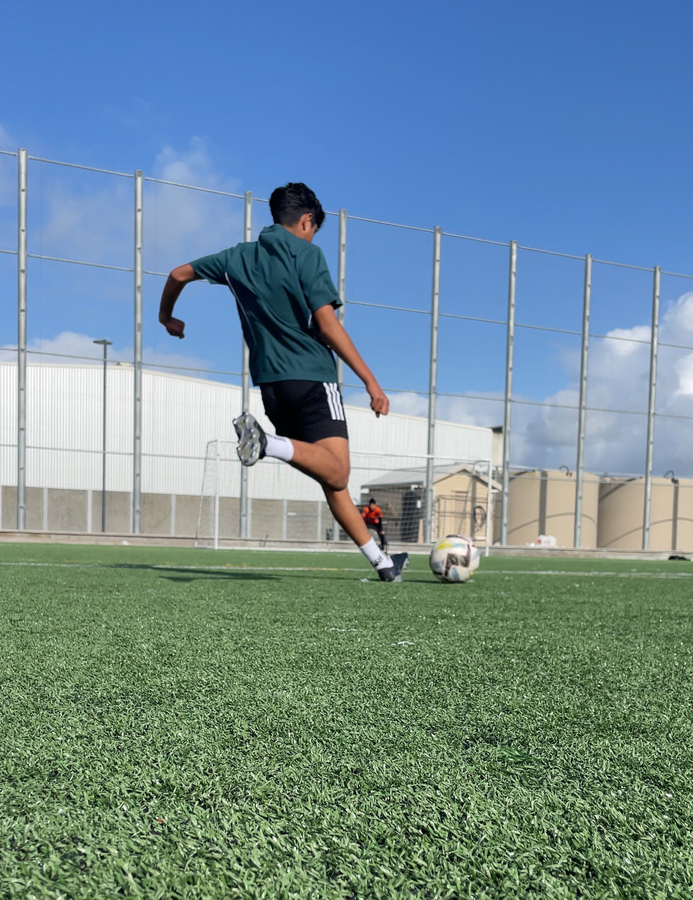

I play as a central defensive midfielder (CDM) for both my school and club teams, a position that demands strong tactical awareness, stamina, and the ability to break up opposition attacks. I represent Pakuranga College in the First XI team, where I take pride in holding the midfield, providing defensive cover, and linking play between the backline and attackers. Outside of school, I also play for Papakura Football Club, where I continue to develop my skills and gain valuable match experience. Playing in both teams has helped me grow as a player, improving my positioning, passing range, and overall understanding of the game.

I currently play for two football teams: the Pakuranga College First XI and Papakura Football Club. Representing Pakuranga College in the First XI is a great honour, as it allows me to compete at a high level with my school peers while proudly wearing the school colours. The team is competitive and well-structured, and playing in this environment has pushed me to improve both technically and mentally. Alongside school football, I also play for Papakura Football Club, where I continue to develop my game through regular training and competitive matches. Being part of both teams gives me the opportunity to experience different styles of play, learn from different coaches, and grow as a well-rounded footballer.

With the experience I’ve gained playing for Pakuranga College First XI and Papakura Football Club, my future goals in football are to continue developing my skills as a central defensive midfielder and take my game to the next level. I aim to secure a spot in a higher-level club team, possibly in a regional or national league, where I can compete against stronger opponents and grow under more intense pressure. Long term, I hope to earn opportunities for trials or scholarships, either locally or overseas, that could lead to playing at a semi-professional or professional level. Alongside this, I want to keep improving my leadership on and off the field, eventually becoming a key player and role model in any team I play for.